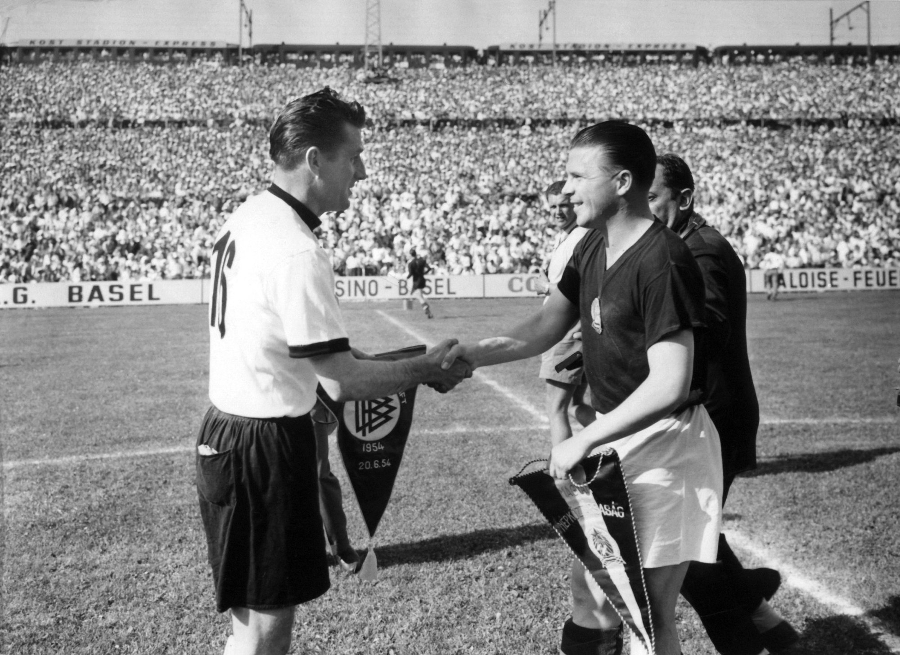
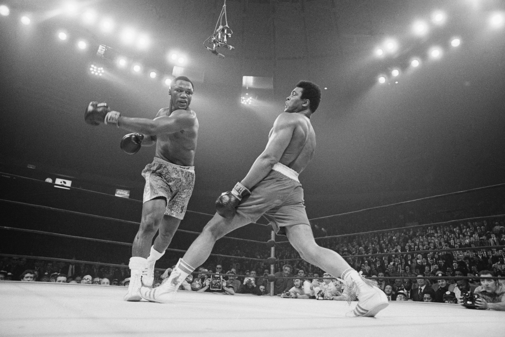

Jesse Owens


A három csíkos ábrát Adolf Dassler egy finn sportszergyártól, a Karhutól vásárolta meg az 1952-es Olimpia után.
Adi Dassler elkészíti első cipőjét. Adi Dassler három elvet követett munkája során: olyan cipőt alkotni, mely maximálisan kielégíti az adott sport és sportoló igényeit, megvédeni a sportolókat a lehetséges sérülésektől és mindezek mellett tartós, kiemelkedő minőségű terméket készíteni.
Adi Dassler elkészítette az első speciális labdarúgó és atlétika cipőit. Ez volt az első alkalom, hogy a cipőket szögekkel és stoplikkal látta el valaki.
A berlini Olimpián Jesse Owens parádés szereplést nyújt az Adi Dassler által gyártott cipőkben: 12 számban indul, melyből négyben aranyérmet nyer, és szinte minden számban új olimpiai csúcsot állít fel.
Adi Dassler a világháború után újra megkezdi a termelést, immár 47 munkással. Megszületik nevének első 3-3 betűjéből összeolvasztott adidas márkanév.
Piacra kerül az első „Samba” labdarúgó cipő, amely máig a piac egyik legkedveltebb sport és utcai vise-letre is alkalmas cipője.
Bernben, a Labdarúgó Világbajnokságon Adi Dassler is jelen van, ahol a döntőt Magyarország és Németország játssza. Félidőben 2-0-s állásnál az Adi Dassler által kifejlesztett, talajviszonyoknak megfelelő becsavarozható, hosszabb stoplira váltanak a németek, amely segítségével 2-3-ra fordítják a végeredményt.
A mexikói Labdarúgó Világbajnokságon az adidas „Telstar” labdája volt a hivatalos meccslabda.
Muhammad Ali és Joe Frazier megvívja az „Évszázad csatáját”. Mindketten az Adi Dassler által speciálisan kifejlesztett boxcipőt használják.
Piacra kerül a „Copa Mundial”, mely immár 30 éve a világ legnagyobb számban eladott focicipője.
Az 1996-os az adidas történelmének egyik legsikeresebb éve: mind a Labdarúgó Európa Bajnokságon mind az Atlantai Olimpiai Játékokon átütő sikereket ért a márka és az általa támogatott sportolók.
Londonban jelentik be az adidas Group és az NBA közötti szerződés aláírást, aminek köszönhetően a 2006/2007-es szezon kezdetétől az adidas lesz az NBA mezek és kiegészítők hivatalos szállítója.